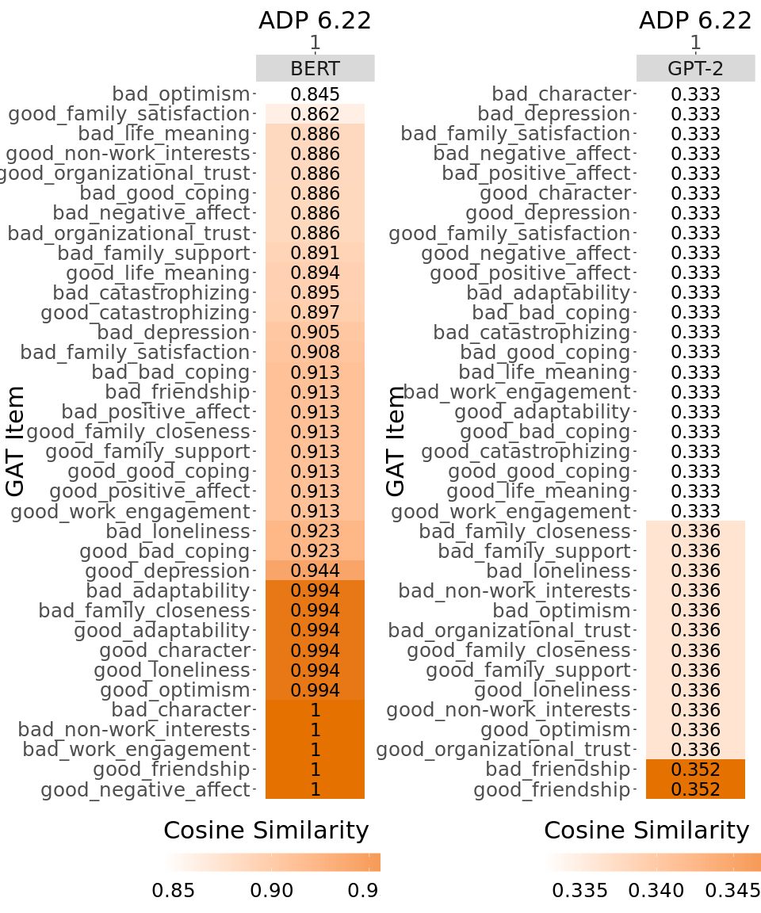
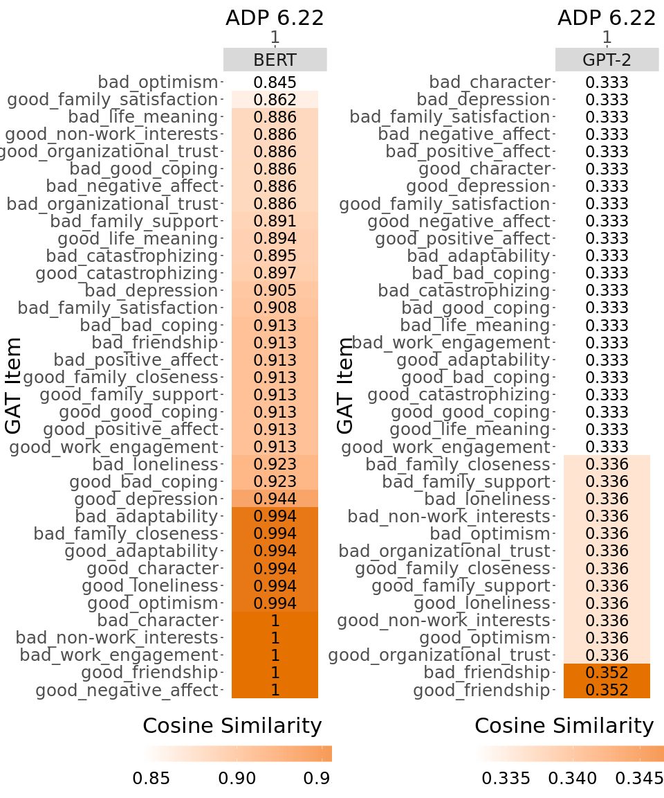

Analyzing Data From Documents
Findings
Army Doctrine Publication serves as the baseline document.
 Similarity Analysis using BERT
Similarity Analysis using BERT
 Similarity Analysis using GPT
Similarity Analysis using GPT
 Similarity of GAT doc to ADP
Army Doctrine Publication serves as the baseline document.
Similarity Analysis using BERT
Similarity Analysis using GPT
 Similarity of GAT doc to ADP
##
## Attaching package: 'dplyr'## The following objects are masked from 'package:stats':
##
## filter, lag## The following objects are masked from 'package:base':
##
## intersect, setdiff, setequal, union|
|
|
Program Contacts: Joel Thurston and Cesar Montalvo |